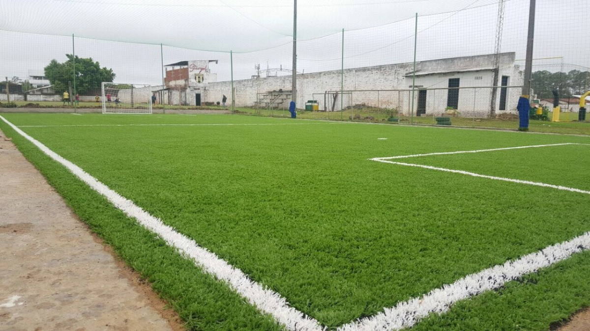

Suspensión del torneo
Con motivo de la situación de público conocimiento y la información que circula del Ministerio
de Deportes de la Nación, hacemos llegar a los lectores el siguiente aviso sobre la pandemia
COVID-19.
Frente al estado de emergencia sanitaria establecido en la provincia de Buenos Aires por el
coronavirus, las autoridades decidieron la suspensión por el plazo de 15 días de todas las
actividades.
La suspensión dispuesta podrá ser prorrogada si existieran nuevas recomendaciones del
Ministerio de Salud.“Consideramos que es prioritario asegurar al
máximo las medidas de prevención dispuestas por el Ministerio de Salud. Para ello, es
necesario limitar las actividades con alta concentración de personas. Debemos cuidarnos
tanto individual como colectivamente, respetando y difundiendo los protocolos
sanitarios”, se informó.
Canchas en donde se disputan los partidos
Por el momento disponemos de tres canchas en donde se pueden disputar los partidos. Todos los turnos se hace cargo el organizador, cuando se disputen las fechas el organizador se encarga en notificar al capitan de cada equipo que participe. Al capitan se le va a notificar la cancha donde será el encuentro, la hora a disputar, el nombre de los tres arbitros y se les recordadara los amonestado o sanciones que tenga el equipo.